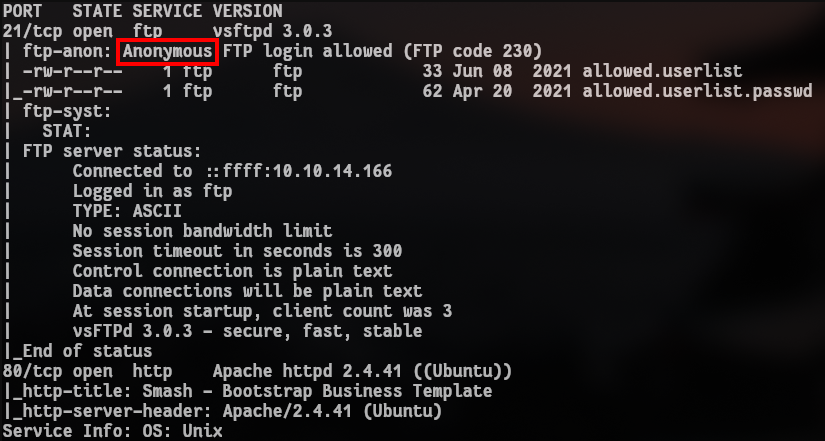

Contacto:
Instagram
ablaetneufs.reivaj@hotmail.com
En la máquina Crocodile de Hack The Box, nivel Tier 1 Very Easy, se proporcionó la IP http://10.129.1.15 para enumerar servicios con Nmap, explorar un servidor FTP, realizar enumeración web con Gobuster, y utilizar Caido para un ataque de fuerza bruta que permitió acceder al panel de login y obtener la root flag.
Inicié con un escaneo de puertos en la IP 10.129.1.15 utilizando Nmap para identificar servicios activos. El comando ejecutado fue:
sudo nmap -sV -Pn -sC 10.129.1.15
Consulté el manual de Nmap y encontré que el switch -sC ejecuta scripts básicos de reconocimiento, como se usó en el comando anterior. Respuesta: -sC.
El output de Nmap mostró el puerto 21 abierto con el servicio FTP ejecutando vsftpd 3.0.3. Respuesta: vsftpd 3.0.3.
El output de Nmap mostró que el login anónimo en FTP fue exitoso con el código 230. Respuesta: 230.
El output de Nmap confirmó que el usuario para login anónimo es anonymous sin contraseña. Respuesta: anonymous.

Conecté al servidor FTP con ftp 10.129.1.15 e inicié sesión como anonymous. Usé el comando ls para listar los archivos disponibles, que mostró allowed.userlist y allowed.userlist.passwd. Luego, usé el comando get para descargar ambos archivos. Respuesta: get.
El archivo allowed.userlist contenía varios usuarios, incluyendo admin, que indica privilegios altos. Respuesta: admin.
El output de Nmap mostró el puerto 80 abierto con Apache httpd 2.4.41. Respuesta: 2.4.41.
Consulté gobuster --help y encontré que el switch -x permite especificar extensiones de archivo. Ejecuté:
gobuster dir -u http://10.129.1.15 -w /usr/share/wordlists/dirb/common.txt -x php,html,txtRespuesta: -x.
Al ejecutar el comando anterior con -x php,html,txt Gobuster reveló /login.php (Status: 200) y /logout.php (Status: 302).
Respuesta: /login.php.
Usé Caido para interceptar el formulario de login en http://10.129.1.15/login.php. A continuación, detallo el proceso con las imágenes correspondientes:
1. Intercepté la petición del formulario de login en Caido, mostrando los parámetros enviados en texto plano.
2. Navegué a la pestaña Sitemap en Caido para explorar las rutas del sitio.
3. Dentro del Sitemap, identifiqué las rutas disponibles.
4. Encontré el dominio con el archivo login.php y remarqué que los parámetros de la petición (usuario y contraseña) se enviaban en texto plano, como se muestra sin número en la imagen.
Envié la petición interceptada a la pestaña Automate en Caido para configurar un ataque de fuerza bruta con iteracion "Matrix":
1. Accedí a la pestaña Automate.
2. Seleccioné el modo de ataque Matrix.
3. Remarqué el placeholder del campo de usuario.
4. Seleccioné el tipo "Simple List" para el campo de usuario.
5. Cargué el listado de usuarios desde allowed.userlist, como se muestra sin número en la imagen.
Continué configurando el ataque Matrix para el campo de contraseña:
6. Remarqué el placeholder del campo de contraseña.
7. Seleccioné el tipo "Simple List" para el campo de contraseña.
8. Cargué el listado de contraseñas desde allowed.userlist.passwd, como se muestra sin número en la imagen.
Configuré la concurrencia del ataque Matrix:
9. Establecí el número de tareas simultáneas en 1 y configuré un delay de 450ms para evitar saturar el servidor.
10. Le di a run (No fue tan complicado).
El ataque Matrix en Caido identificó las credenciales válidas: admin con contraseña rKXM59ESxesUFHAd. La petición exitosa se destacó por su longitud (length) diferente en los resultados de Automate.
Con las credenciales admin y rKXM59ESxesUFHAd, inicié sesión en el panel de http://10.129.1.15/login.php.
Una vez en el panel, la root flag estaba visible sin necesidad de escalar privilegios.